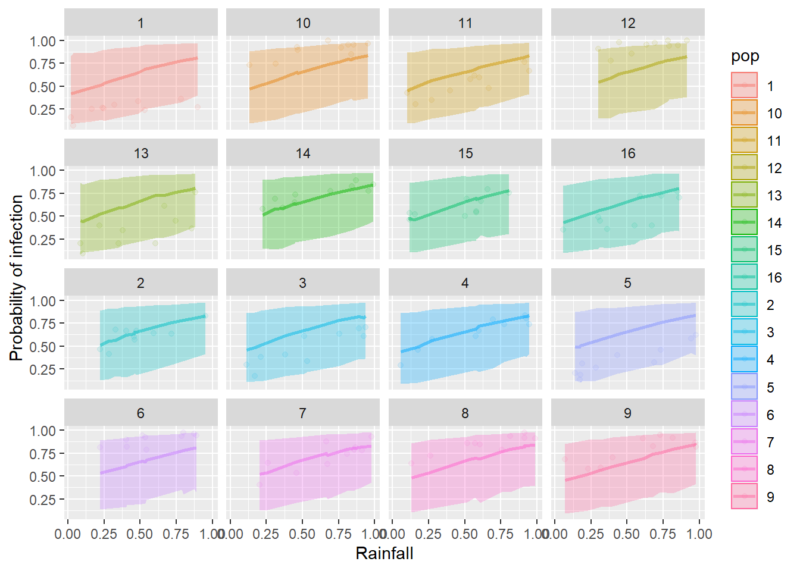
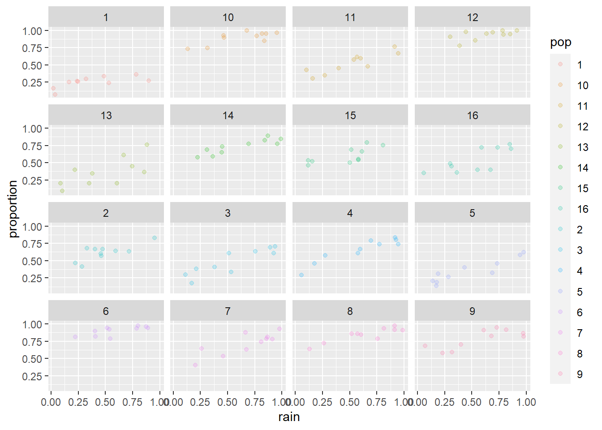

This week we extended the analytical framework that we have been working with to include both fixed and random effects. We have discussed why we might want to use it and how to interpret the results of these tools. The purpose of this lab is to get you comfortable using GLMM with real data.
By the end of this lab, you should 1) understand why we use mixed effects models, 2) be comfortable specifying general linear mixed models in R and applying the tool to analyze data from start to finish, and 3) be able to diagnose and interpret the results of these models.
We have looked at the GLMM initially this week because of it’s utility for handling the combination of fixed and random effects for the types of data that we commonly encounter in biology and ecology. But, as a special case of the GLMM, we could look at using a Gaussian (normal) error distribution or any suite of transformed distributions for our models, too! The advantage of doing this is that the models tend to be fit a little more easily (i.e. reliably) under the arguably unstable engines and ever-changing optimization algorithms for this model class. This special case of the GLMM goes by a variety of names depending on uses. For example, we might refer to them as ‘repeated measures’ ANOVA, ‘nested’ or ‘factorial’ ANOVA, or ‘linear mixed models’ (LMM).
You’ll want the tidyverse loaded as always, and we’ll also be playing with the new functions we learned about from lme4, merTools, and lmerTest. Finally, we’ll need some functions from the car and AICcmodavg packages as usual. You can go ahead and load those when you are ready to get started.
library(tidyverse)
library(lme4)
library(merTools)
library(lmerTest)
library(car)
library(AICcmodavg)Let’s take a look at a new data set for this example. Read in the data file called horse_data.csv from the class data sets.
# Read in the data
horses <- read.csv("data/horse_data.csv")These data simulated from 10 populations of wild horses in the Apalachian highlands of the southeastern United States. The response in the data is the propotion of horses infected out of the total starting number (N), and is a measure of the number of horses in a given population that were infected with rain rot (Dermatophilus congolensis) during a 10-year observation period.
A brief description of the data follows:
infected: Number of horses in population infected
N: number of horses observed within the population each year
rain: standardized measure of rain each year
temp: standardized temperature for each year
pop: population IDYour charge will be to fit a series of models and analyze them within the context of a generalized linear mixed effects model to determine what influences rain and temperature have on the probability of infection across years.
First, build a candidate model set with models corresponding to specific hypotheses. There are several covariates in this data set, so you will need to put some thought into how you choose your variables and what hypotheses these actually represent. You will need to make a minimum of 3 models and a maximum of 5.
You need to account for repeat measurements within populations. Therefore, you must include pop as a random effect on the intercept within your models. You will also need to model the response as a binomial outcome (ie. number infected out of N) for each pop and year.
Begin by making a variable in your data set to contain the number of horses that were not infected so we can do this.
horses$not_infected <- horses$N - horses$infectedWe’ll also want to convert pop to a character string before we get started so that our plotting code is easier at the end of the assignment:
horses$pop <- as.character(horses$pop)Now, you can fit a binomial GLMM that estimates the proportion of infected horses based on the numbers that were or were not infected in each year.
Make a list object of at least 3 models like this that you chose to test so you can do model selection later. If you have forgotten how to do this, have a look in the text book.
You may wish to begin by fitting a null model (model of the mean) for comparison with the others. Here is an example to get you started:
null_model <- glmer(
cbind(infected, not_infected) ~ 1 + (1 | pop),
data = horses,
family = binomial
)Question 1. Why did you choose to test each of the models in your model set? What hypotheses do each of these models represent?
Next we will use an information-theoretic approach to model selection based on Akaike’s information criterion. You can use the aictab function in the AICcmodavg package using the same methods we learned in Chapter 11.
##
## Model selection based on AICc:
##
## K AICc Delta_AICc AICcWt Cum.Wt LL
## rain_temp_model 4 748.70 0.00 0.51 0.51 -370.22
## rain_model 3 748.80 0.10 0.49 1.00 -371.32
## null_model 2 1022.07 273.37 0.00 1.00 -509.00
## temp_model 3 1023.39 274.69 0.00 1.00 -508.62Question 2. According to your model selection statistics, which of your models was the top model? Is there clear evidence for a best model (use \(\Delta\)AIC and wi to decide)? Were there any variables that were clearly more important than others in your candidate set?
Before you go any further (i.e., before you look at any of the model summaries) go ahead and estimate the overdispersion parameter, \(\hat{c}\) for your most complex model using the c_hat() function in the AICcmodavg package to determine whether we need to adjust our model selection. Remember that if \(\hat{c} > 1\) we should adjust our model selection to account for overdispersion, like this:
c_hat_est <- c_hat(my_model)
c_hat_estIf \(\hat{c} > 1\), you can adjust your model selection as follows:
aictab(cand.set = model_list,
modnames = model_names,
c.hat = c_hat_est)Question 3. What was the estimated value of c_hat for your most complex model? If you needed to adjust your model selection, did this change the results you reported in Question 2?
Now go ahead and look at the summary of your best model.
Food for thought: What factors were included in your best model? Are they all considered significant at \(alpha\) = 0.05? You could use the Anova() function from the car library to find out. This is what it would look like for the example model that I made above.
Anova(my_model, Type = "III")Remember, you can also examine directionality of relationships between explanatory variables in your best model and the response using the summary() function in R.
Question 4. Of the variables included in your best model, which were statistically significant predictors of the probability that horses were infected with rain rot? How did the probability of rain rot change with this/these variables based your estimated coefficients (slopes).
To wrap things up, let’s go ahead and make predictions from our best models following the examples in the textbook.
You can start by calculating the observed proportion of horses infected out of the total number in each year and population:
horses$proportion <- horses$infected/horses$NNext, make your predictions using the methods demonstrated in Chapter 15.2.

And then begin your predictive plot by plotting the observed proportion in each population against the explanatory variable included in your best model. For the example below, I’ll use the rain variable as my x just for the sake of demonstration. Then, you will need to replace this if it was not your best supported explanatory variable and add your predictions:
ggplot(horses,
aes(x = rain, y = proportion, fill = pop, color = pop)) +
geom_point(alpha = 0.20) +
facet_wrap(~pop)
Question 5. Use the results of your model selection statistics, the summary() of your best model, and the predictive plots you have made to report your results in a brief (3-5 sentences max) paragraph.
This work is licensed under a Creative Commons Attribution 4.0 International License. Data are provided for educational purposes only unless otherwise noted.